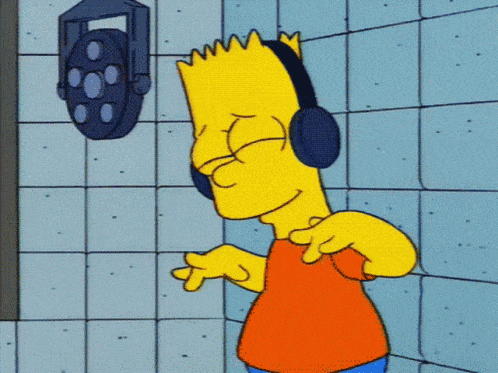
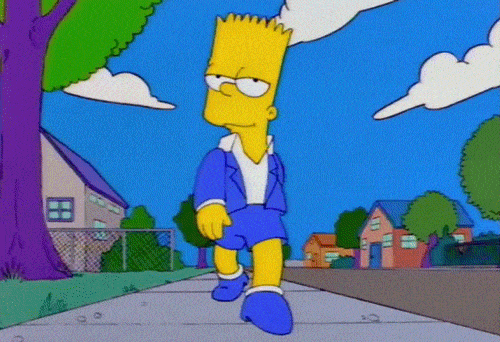
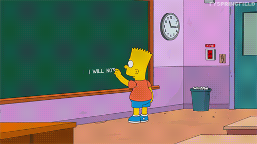
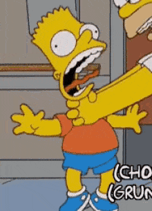
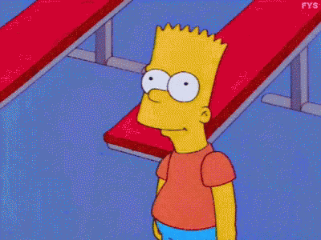
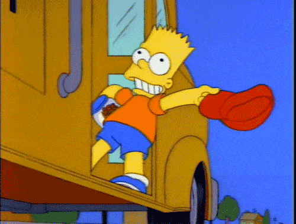

Bartholomew Jo-Jo Simpson
Bart edustaa psykologista tyyppiä, jossa ei oivalla kykyjään (englanniksi underachiever). Tottelemattomuus ja sääntöjen piittaamattomuus ovat hänen tyypillisiä käyttäytymismallejaan. Hänen kepposensa ja huliganismejaan on usein monimutkaista ja harkittua, ja hänen tekonsa ja puheensa kuvaavat häntä usein terävä- ja joustavamieliseksi poikaksi.
Nancy Cartwright
IMDB




